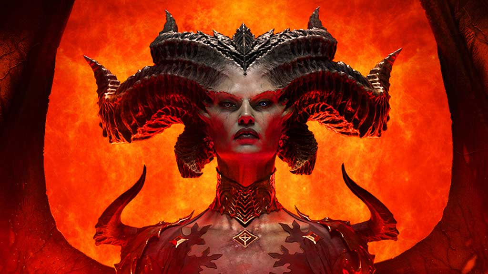
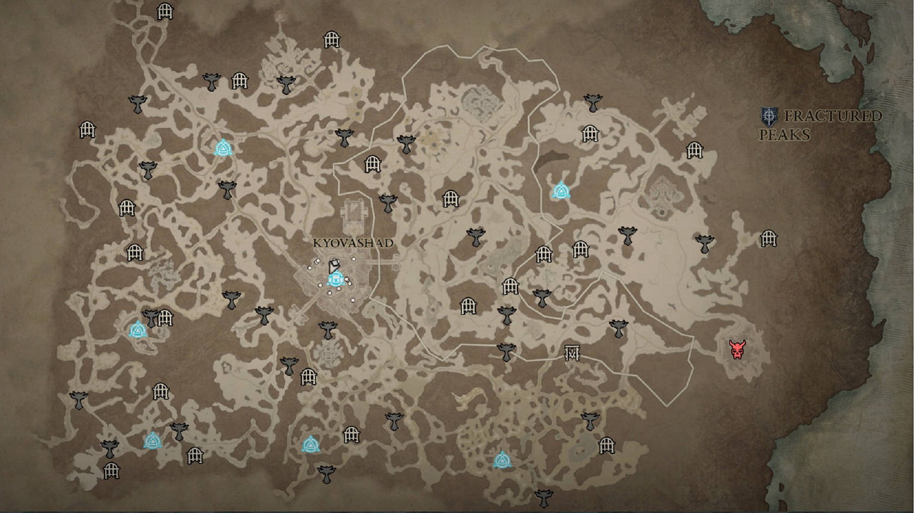

After the destruction of the Black Soulstone, the defeat of the Prime Evil, and the fall of Malthael, Angel of Death, countless lives have been lost and the denizens of Sanctuary find themselves struggling through the darkest of ages. Years have passed and, as some semblance of regular life starts rebuilding, a threat as old as the land itself begins to stir.
Diablo IV takes place fifty years after the events of Diablo III: Reaper of Souls, after millions have been slaughtered by the actions of the High Heavens and Burning Hells alike. In the power vacuum, a legendary name resurfaces—Lilith, daughter of Mephisto, the whispered progenitor of humanity. Her grip on Sanctuary cuts deep into the hearts of men and women alike, cultivating the worst in its denizens and leaving the world a dark, hopeless place.
The main plot is similar to Diablo II in that it is a "following-in-the-footsteps-of" story; specifically, the game's player character(s) is/are pursuing Lilith across Sanctuary. A core theme of the game is "hatred"; the motif of hate consuming the world, and the hearts of the player character(s). The Horadrim play a key role in the game's story, as well as Inarius. The feud between him and Lilith is one of the game's key plot points.
Diablo IV takes place fifty years after the events of Diablo III: Reaper of Souls, after millions have been slaughtered by the actions of the High Heavens and Burning Hells alike. In the power vacuum, a legendary name resurfaces—Lilith, daughter of Mephisto, the whispered progenitor of humanity. Her grip on Sanctuary cuts deep into the hearts of men and women alike, cultivating the worst in its denizens and leaving the world a dark, hopeless place.
The main plot is similar to Diablo II in that it is a "following-in-the-footsteps-of" story; specifically, the game's player character(s) is/are pursuing Lilith across Sanctuary. A core theme of the game is "hatred"; the motif of hate consuming the world, and the hearts of the player character(s). The Horadrim play a key role in the game's story, as well as Inarius. The feud between him and Lilith is one of the game's key plot points.

